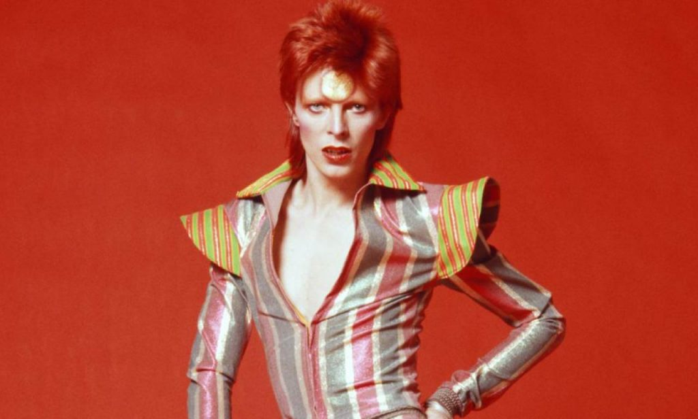
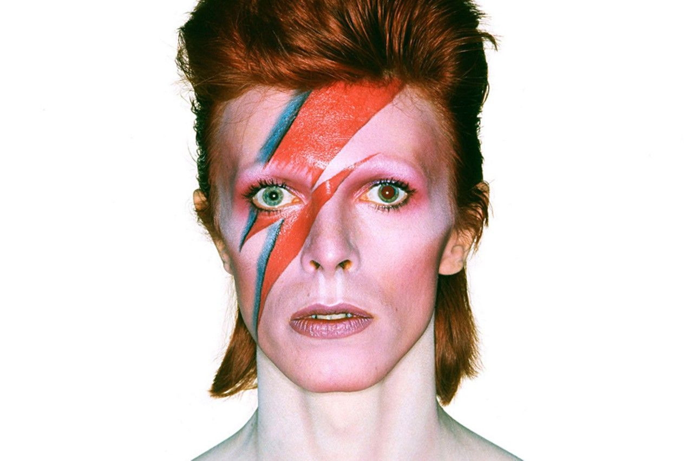
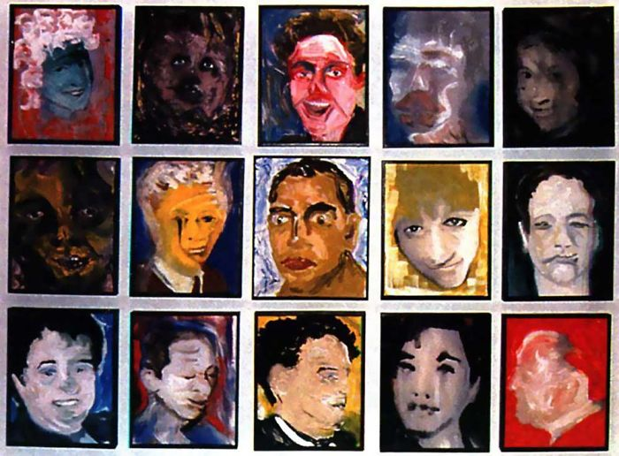

David Bowie (1947–2016) no fue solo un músico; fue una fuerza artística multidisciplinaria que redefinió los límites del rock, la moda, la actuación y la tecnología. A lo largo de más de cinco décadas de carrera, su constante capacidad de metamorfosis lo convirtió en uno de los creadores más influyentes e innovadores de la historia contemporánea.


